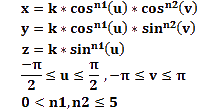

Shapes
Predefined Shapes

N = (NxN mesh)
Rendering mode:
Parametric Surfaces
x =
k =
y =
k =
z =
k =
Umin
Umax
Vmin
Vmax
Superellipsoids

n1 = n2 =
Images&Colour
Default Images
Displacement
Customised Image
Customised Colour
Colour:
Pick Colour
Displacement Mapping application
This application can render different types of shapes, apply displacement to their points and colour them with simple colours or using a texture.
Shapes: You can select a predefined shape or create a new one combining parametric equations.
The Invert Normals checkbox will change the orientation of the actual normals on the parametric surface.
You can also generate a superellipsoid introducing the two required parameters.
Mesh size: The surfaces can be rendered with more or less number of points. This can be selected changing the value of N (NxN mesh).
Rendering mode: The model can be visualized as a surface (default) but also with points or lines. You can change the mode by clicking on the list.
Images-Displacement: The image for the displacement can be picked from the default ones or you can upload a new
one from the Customised Image box. The amount of displacement applied can be increased or decreased.
Once the displacement has been activated, it can be switched off clicking on the image that is being used (red border).
Colour: This application starts using the blue colour range, but it can be changed on the Customised Colour box. You can choose between red, green or blue, or upload an image to colour the surface in a similar way to the Texture Mapping technique.
The model can be rotated moving the mouse or finger(touchscreens) around the page after clicking on it and holding down.
It can also be zoomed in or out with the mouse wheel, up and down arrows, or the usual finger gesture.
You can convert the model to an image file pressing the Save as Image button and downloading it as a png file. Unfortunately, it may not be supported by some web browsers.